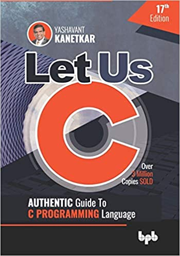
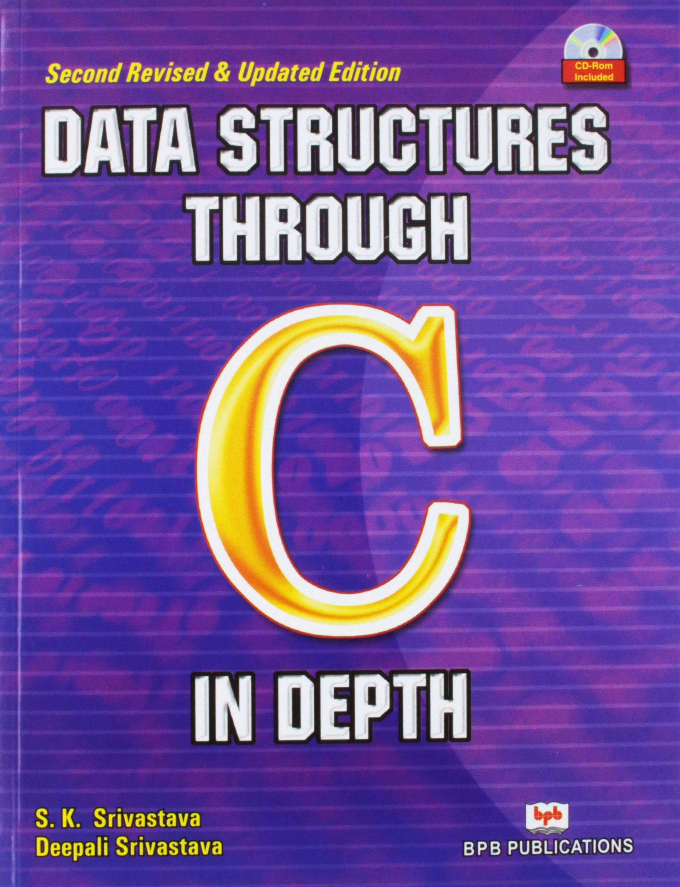
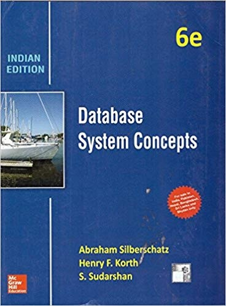

1. Let Us C: Authentic Guide to C PROGRAMMING Language 17th Edition
Key Features Strengthens the foundations, as a detailed explanation of programming language concepts are given Lucid explanation of the concept Well thought-out, fully working programming examples End-of-chapter exercises that would help you practice the skills learned in the chapter Hand-crafted “KanNotes” at the end of the each chapter that would help the reader remember and revise the concepts covered in the chapter Focuses on how to think logically to solve a problem DescriptionThe new edition of this classic book has been thoroughly revamped, but remains faithful to the principles that have established it as a favourite amongst students, teachers and software professionals round the world. “Simplicity”- that has been the hallmark of this book in not only its previous sixteen English editions, but also in the Hindi, Gujrati, Japanese, Korean, Chinese and US editions. This book doesn’t assume any programming background. It begins with the basics and steadily builds the pace so that the reader finds it easy to handle advanced topics towards the end of the book.
- Language : English
- Publisher : BPB Publications; Seventeenth edition (4 September 2020); BPB Publications
- ISBN-10 : 9389845688
- Paperback : 486 pages
- Item Weight : 837 g
- ISBN-13 : 978-9389845686
- Country of Origin : India
- Dimensions : 17.78 x 2.79 x 25.4 cm
2. Data Structures Through C in Depth Paperback – 30 May 2004
About The Book The book Data Structures Through C in Depth is primarily meant for computer science students who are learning C language. The book explains the essential components of C language through the simplest ways, with illustrative examples. Ten chapters along with important questions and their brief answers are provided in the book. The most important highlight of the book is that it has been written in accordance with the syllabus of two different examination bodies DOEACC society and the Indra Gandhi National Open University. Both beginner and advanced level students of C language get to learn a lot from the book. The book starts by providing a brief introduction to data structures, the basic concepts like pointers, arrays and structures are explained in this chapter.
- Print Length :- 524 pages
- Language :- English
- Publisher :- BPB Publications
- Publicaton Date :- 30 May 2004
- Dimensions :- 26.6 x 2 x 21.8 cm
3. Database Management Systems 3e (English, Paperback, RAMAKRISHNAN.)
Database Management Systems is a comprehensive book for undergraduate students of Computer Science Engineering. The book comprises chapters on the relational model, application development, hash-based indexing, external sorting, concurrency control, crash recovery, security and authorization and data mining. In addition, the book consists of several examples and case studies to help understand the concepts better. This book is essential for IT professionals Abraham Silberschatz is a Professor of Computer Science at Yale University. He is renowned for his books on Operating System Concepts and Database Management. Professor Silberschatz completed his PhD at the New York State University at Stony Brook and worked as the Vice President of the Information Sciences Research Center at Bell Laboratories and prior to that as a Professor in the Department of Computer Science at the University of Texas in Austin. His research interests lie in Operating Systems, Database Systems, Real-time Systems, Storage Systems Network Management and Distributed Systems. Henry F. Korth is Weiseman Professor and Chair of the Department of Computer Science and Engineering at Lehigh University. He is renowned for his works on Mobile Computing and Time-Constrained Transaction Management. Prof. Korth completed his PhD. at Princeton University. He was the Director of Database Principles Research at Bell Laboratories, NJ. He is interested in the research of XML data management, web-based data, main-memory database systems, real-time systems, parallel systems and other topics S. Sudarshan is a Professor in the Department of Department of Computer Science and Engineering at the Indian Institute of Technology, Bombay. He is known for his books: Database Management Systems: Strayer University Custom Edition and Oracle 8I. Prof. Sudarshan completed his PhD. at the University of Wisconsin, Madison and worked as a Member of Technical Staff in the Database Research Group at Bell Laboratories. His research interests include query processing and optimization, authorization, and keyword querying of databases.
- Author:RAMAKRISHNAN
- Binding: Paperback
- Publisher: McGraw Hill Education India
- Genre: Computers
- ISBN: 9789339213114, 9339213114
4. Operating System Concepts Paperback – January 1, 2012

Operating System Concepts, Windows Xp Update starts with chapters on computer system structures and operating system structures to enlighten readers regarding the key areas involved in successfully running both the computer and its software. The book deals with the underlying concepts that define an operating system, such as process management, file systems, storage access, resource protection, and memory management. It also describes in detail two operating systems from Microsoft, Windows XP and Windows 2000. Under the concept of process management, processes and threads have been discussed in detail by the author. A process may be defined as an instance of any computer programme during its execution. Processes consist of a variety of resources like memory and certain security attributes. A thread is a part of the process, and is independently managed by the operating system scheduler. The file systems and storage access features like file system interface and implementation, mass-storage structure, and distributed file systems have been covered extensively by the authors in the book. Under the resource protection and memory management concepts, the book covers important topics like virtual memory and memory protection. Along with Windows XP and 2000, the authors have also included a separate section on the operating system Linux, which is also used widely around the world by computer users. The authors have taken great care to present the contents of Operating System Concepts, Windows Xp Update in an easy-to-understand manner.
- Publisher : WILEY INDIA; 9th edition (January 1, 2012)
- Language : English
- ISBN-10 : 8126554274
- ISBN-13 : 978-8126554270
- Item Weight : 2.31 pounds
- Dimensions : 7.87 x 5.51 x 1.57 inches
5. Computer Networking: A Top-Down Approach Paperback – 30 Jun 2017 - Computer Networking (English, Paperback, Keith W. Ross, James F. kurose)
Building on the successful top-down approach of previous editions, the Sixth Edition of Computer Networking continues with an early emphasis on application-layer paradigms and application programming interfaces (the top layer), encouraging a hands-on experience with protocols and networking concepts, before working down the protocol stack to more abstract layers. This book has become the dominant book for this course because of the authors’ reputations, the precision of explanation, the quality of the art program and the value of their own supplements. Features A balanced presentation focuses on the Internet as a specific motivating example of a network and also introduces students to protocols in a more theoretical context. A chapter on wireless and mobility includes insight into 802.11 and coverage of ad hoc networking. Principles and Practice boxes throughout demonstrate real-world applications of the principles studied. Case History boxes are sprinkled in to help tell the story of the history and development of computer networking. Material on application programming development is included, along with numerous programming assignments. A highly developed art program enhances the descriptions of concepts. A comprehensive Companion Website, which includes additional learning material, links to relevant online resources and lab material Table of Contents Chapter 1 Computer Networks and the Internet Chapter 2 Application Layer Chapter 3 Transport Layer Chapter 4 The Network Layer Chapter 5 The Link Layer: Links, Access Networks and LANs Chapter 6 Wireless and Mobile Networks Chapter 7 Multimedia Networking Applications Chapter 8 Security in Computer Networks Chapter 9 Network Management
- Language: English
- Binding: Paperback
- Binding: Paperback
- Binding: Paperback
- ISBN: 9789332585492, 9332585490
- Edition: 6th, 2017
- Pages: 888